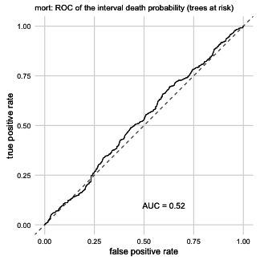
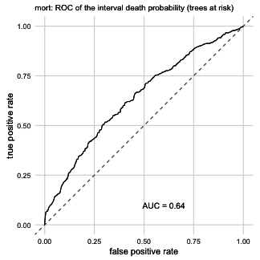
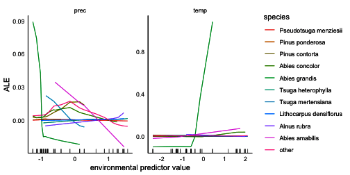
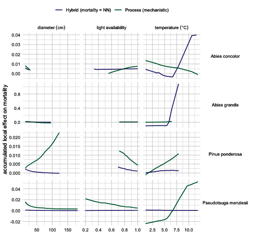

Mortality: a binomial response and a neural-network process
Source:vignettes/E-Mortality.Rmd
E-Mortality.RmdMortality is the hardest of FINN’s six responses to calibrate, and the one where the choice of likelihood matters most. This vignette takes it on its own terms: what the observation actually is, which likelihood belongs to it, how to swap the process for a neural network, and (the part that is easy to get wrong) how to score the result.
It follows the same 200-fit / 200-holdout FIA sample as
Fitting FINN to forest inventory data, and like that
page it is precompiled by
vignettes/build.R: the models below are really trained.
Mortality is a proportion, not a rate
makeObsData() returns mortality as a pair of
counts rather than a bare rate:
-
n_at_risk: trees alive at the start of an inventory interval, -
n_died: how many of those were dead at the end,
with the yearly rate
mort = 1 - (1 - n_died / n_at_risk)^(1 / period_length)
derived from them: FINN simulates yearly steps, and an inventory
interval of period_length years is that many simulated
years, whose yearly mortalities fit() compounds into the
same per-year rate before it meets the observation. The counts are
exactly the cbind(died, survived) response of a binomial
GLM, and it is deliberate. A bare proportion throws away the sample
size: it cannot tell a site where 1 of 1 trees died from one where 60 of
60 did, even though the second carries sixty times the information.
The pair is a closed cohort; both columns are pinned
to the tree’s state at the start of the interval. That matters more than
it sounds. FIA re-identifies a tree’s species between visits, so a rate
built by dividing “deaths this year” by “survivors last year” can book a
death against the species a tree ended as while the denominator
counted the species it started as, and report more deaths than
there were trees. Pinning both columns to the interval start makes
n_died <= n_at_risk true by construction. (Trees that
recruit during the interval are in neither column; see
?makeObsData for the open-cohort alternative.)
# The tables ship with FINN as datasets (?fia_obs_dt), already in FINN's input
# format, so there is nothing to read or prepare.
# --- training sites --------------------------------------------------------
obs_dt <- fia_obs_dt # observations, wide (one column per variable)
env_dt <- fia_env_dt # RAW, untransformed climate
init_trees <- fia_init_trees
species_dt <- fia_species_dt
# --- holdout sites: never seen during fitting ------------------------------
obs_test <- fia_obs_test
env_test <- fia_env_test
init_test <- fia_init_test
obs_dt[, .(siteID, year, period_length, species_name, n_at_risk, n_died, mort)][n_at_risk > 0][1:6]
#> siteID year period_length species_name n_at_risk n_died mort
#> <int> <int> <int> <char> <int> <int> <num>
#> 1: 1 10 10 Pseudotsuga menziesii 2 0 0.0000000
#> 2: 1 10 10 Abies grandis 6 0 0.0000000
#> 3: 1 10 10 other 3 1 0.0397355
#> 4: 1 20 10 Pseudotsuga menziesii 2 0 0.0000000
#> 5: 1 20 10 Abies grandis 10 0 0.0000000
#> 6: 1 20 10 other 2 0 0.0000000How much mortality signal is actually in this sample? Less than the number of rows suggests:
cat(sprintf("observations with a cohort at risk : %d\n", obs_dt[n_at_risk > 0, .N]))
#> observations with a cohort at risk : 1003
cat(sprintf("of which mort is exactly zero : %d (%.0f%%)\n",
obs_dt[n_at_risk > 0 & n_died == 0, .N],
100 * obs_dt[n_at_risk > 0, mean(n_died == 0)]))
#> of which mort is exactly zero : 688 (69%)
cat(sprintf("trees at risk (train) : %d\n", obs_dt[, sum(n_at_risk)]))
#> trees at risk (train) : 9907
cat(sprintf("deaths (train) : %d\n", obs_dt[, sum(n_died)]))
#> deaths (train) : 656
cat(sprintf("pooled mortality : %.3f over the ten-year interval, %.4f per year\n",
obs_dt[, sum(n_died) / sum(n_at_risk)],
obs_dt[, 1 - (1 - sum(n_died) / sum(n_at_risk))^(1 / 10)]))
#> pooled mortality : 0.066 over the ten-year interval, 0.0068 per yearA few hundred deaths, and roughly two-thirds of the observations at exactly zero. No likelihood can manufacture information that is not there, but the wrong one can waste what is.
Why binomial and not mse
FINN scores mortality with
loss_family = c(..., mortality = "binomial", ...) by
default. Squared error assumes an unbounded response with constant
variance; mortality is neither. A proportion lives on
and its variance shrinks as the rate approaches either end, so
on a response that is ~69% zeros, MSE puts almost no gradient where the
data actually are.
The binomial term is weighted by n_at_risk, which is
what turns a Bernoulli term into a binomial one. It is the same thing R
does with
glm(prop ~ ., family = binomial, weights = n).
Two models: mechanistic mortality, and mortality as a network
Nsp <- uniqueN(obs_dt$species)
init_cohorts <- makeInitCohorts(init_trees, Nspecies = Nsp)
init_cohorts_test <- makeInitCohorts(init_test, Nspecies = Nsp)
# shared colours for the two model variants, reused below
model_cols <- c("Process (mechanistic)" = "#1b9e77", "Hybrid (mortality = NN)" = "#7570b3")The mechanistic baseline, with all four processes in their functional form:
FINN.seed(42)
m <- finn(
N_species = Nsp,
recruits_dbh = 12.9, # DBH (cm) assigned to a new recruit; ~ FIA's 12.7 cm (5 in) minimum
competition_process = createProcess(~0, FINN::competition, optimizeSpecies = TRUE),
growth_process = createProcess(~ temp + prec, FINN::growth, optimizeSpecies = TRUE, optimizeEnv = TRUE),
regeneration_process = createProcess(~ temp + prec, FINN::regeneration_capped, optimizeSpecies = TRUE, optimizeEnv = TRUE),
mortality_process = createProcess(~ temp + prec, FINN::mortality, optimizeSpecies = TRUE, optimizeEnv = TRUE)
)
fit(m,
env = env_dt, data = obs_dt, init_cohort = init_cohorts, device = "cpu",
epochs = EPOCHS, batchsize = 40L, patches = 4, patch_size = 0.06,
lr = 0.01, env_autoscale = TRUE, plot_progress = FALSE
)Now the same model with mortality replaced by a neural
network, every other process, and the entire fit()
call, unchanged. createHybrid() is the only difference:
FINN.seed(42)
m_mort <- finn(
N_species = Nsp,
recruits_dbh = 12.9,
competition_process = createProcess(~0, FINN::competition, optimizeSpecies = TRUE),
growth_process = createProcess(~ temp + prec, FINN::growth, optimizeSpecies = TRUE, optimizeEnv = TRUE),
regeneration_process = createProcess(~ temp + prec, FINN::regeneration_capped, optimizeSpecies = TRUE, optimizeEnv = TRUE),
mortality_process = createHybrid(~ temp + prec, hidden = c(20L, 20L), transformer = FALSE)
)
fit(m_mort,
env = env_dt, data = obs_dt, init_cohort = init_cohorts, device = "cpu",
epochs = EPOCHS, batchsize = 40L, patches = 4, patch_size = 0.06,
lr = 0.01, env_autoscale = TRUE, plot_progress = FALSE
)Scoring mortality: why not Spearman
The model simulates yearly steps, so its mortality is compared with
an observation as fit() compares it: the simulated yearly
mortalities of the period_length years before the census
compounded into one rate per year,
1 - exp(mean(log1p(-m))), the functional behind the
observed
1 - (1 - n_died / n_at_risk)^(1 / period_length).
evaluate() does this pairing. It simulates the model on
the sites it was fitted to and, with holdout, on sites it
has not seen, aggregates every response the way fit()
scores it, and keeps the paired table ($matched) and the
skill measures ($skill) of each set. The result is also
stored on the model, where summary() reads it.
holdout <- list(data = obs_test, env = env_test, init_cohort = init_cohorts_test)
m$eval(); m_mort$eval()
FINN.seed(1)
ev <- evaluate(m, holdout = holdout)
ev_mort <- evaluate(m_mort, holdout = holdout)
# the paired mortality cells of both models on both sets
mort_of <- function(ev, label)
rbind(ev$train$matched[variable == "mort"][, `:=`(model = label, split = "train")],
ev$holdout$matched[variable == "mort"][, `:=`(model = label, split = "holdout")])
mort_pred <- rbind(mort_of(ev, "Process (mechanistic)"),
mort_of(ev_mort, "Hybrid (mortality = NN)"))
mort_pred[1:3, .(siteID, year, species_name, period_length, n_at_risk, n_died, obs, pred, p_interval)]
#> siteID year species_name period_length n_at_risk n_died obs
#> <int> <int> <char> <num> <int> <int> <num>
#> 1: 1 10 Pseudotsuga menziesii 10 2 0 0.0000000
#> 2: 1 10 Abies grandis 10 6 0 0.0000000
#> 3: 1 10 other 10 3 1 0.0397355
#> pred p_interval
#> <num> <num>
#> 1: 0.0003227343 0.00322266
#> 2: 0.0022701982 0.02247146
#> 3: 0.0050098909 0.04898441Each row is one site, census and species: the observed yearly rate
obs, the simulated yearly rate pred compounded
over the interval, and p_interval, the probability that a
tree dies over the whole interval,
1 - (1 - pred)^period_length.
Rank correlation is the natural first reach, and it is a trap here. Two-thirds of the observed proportions are exactly zero, so Spearman spends most of its power ranking ties against each other; a value near zero cannot distinguish “the model learned nothing” from “the metric cannot see what it learned”.
mort_pred[, .(spearman = round(cor(obs, pred, method = "spearman"), 2), n = .N),
by = .(model, split)][order(split, model)]
#> model split spearman n
#> <char> <char> <num> <int>
#> 1: Hybrid (mortality = NN) holdout 0.07 994
#> 2: Process (mechanistic) holdout 0.03 994
#> 3: Hybrid (mortality = NN) train 0.21 1003
#> 4: Process (mechanistic) train 0.20 1003AUC asks the question the binomial actually poses:
does the model give a higher death probability to a tree that died than
to one that survived? Each observation stands for n_at_risk
Bernoulli trials of which n_died are deaths, all sharing
that observation’s predicted probability of death over the interval, so
rather than expand the trials we weight them, with tied predictions
taking half credit (the standard Mann-Whitney treatment). Written
out:
auc_binom <- function(p, pos, neg) {
g <- data.table(p = p, pos = pos, neg = neg)[
, .(pos = sum(pos), neg = sum(neg)), by = p][order(p)]
neg_below <- cumsum(g$neg) - g$neg # negatives strictly below each p
den <- sum(g$pos) * sum(g$neg)
if (den == 0) return(NA_real_)
sum(g$pos * (neg_below + 0.5 * g$neg)) / den # 0.5 credit for ties
}
auc_tab <- mort_pred[n_at_risk > 0,
.(AUC = round(auc_binom(p_interval, n_died, n_at_risk - n_died), 3),
deaths = sum(n_died),
at_risk = sum(n_at_risk)), by = .(model, split)]
auc_tab[order(split, -AUC)]
#> model split AUC deaths at_risk
#> <char> <char> <num> <int> <int>
#> 1: Hybrid (mortality = NN) holdout 0.537 727 10013
#> 2: Process (mechanistic) holdout 0.524 727 10013
#> 3: Hybrid (mortality = NN) train 0.643 656 9907
#> 4: Process (mechanistic) train 0.639 656 99070.5 is coin-flipping, 1.0 is perfect ranking. evaluate()
computes the same AUC in its skill table, next to the ratio of the
predicted to the observed deaths (the expected deaths
n_at_risk * p_interval summed over the cells):
skill_of <- function(ev, label)
rbind(ev$train$skill[variable == "mort", .(model = label, split = "train", AUC = round(auc, 3),
deaths_ratio = round(deaths_ratio, 2))],
ev$holdout$skill[variable == "mort", .(model = label, split = "holdout", AUC = round(auc, 3),
deaths_ratio = round(deaths_ratio, 2))])
rbind(skill_of(ev, "Process (mechanistic)"), skill_of(ev_mort, "Hybrid (mortality = NN)"))
#> model split AUC deaths_ratio
#> <char> <char> <num> <num>
#> 1: Process (mechanistic) train 0.639 1.30
#> 2: Process (mechanistic) holdout 0.524 1.25
#> 3: Hybrid (mortality = NN) train 0.643 0.43
#> 4: Hybrid (mortality = NN) holdout 0.537 0.45plot() of the evaluation draws the ROC curve behind it,
here of the mechanistic model on the holdout (response
keeps the mortality panel only; without it the page also shows the other
responses):
plot(ev, response = "mort")
and on its training sites:
plot(ev, response = "mort", set = "train")
summary() prints the skill tables of both sets with the
AUC, followed by the convergence of the fit and the environmental
effects. The environmental effects take long on all 200 training sites,
so env and init_cohort give them a subset of
30 sites:
xai_sites <- sort(unique(env_dt$siteID))[1:30]
env_xai <- env_dt[siteID %in% xai_sites]
init_xai <- makeInitCohorts(init_trees[siteID %in% xai_sites], Nspecies = Nsp)
summary(m, env = env_xai, init_cohort = init_xai)
FINN model summary
==================
## Skill (observed vs simulated, aggregated as fit() scores)
Training data:
response R2 correlation RMSE bias pred/obs n AUC
dbh 0.6308 0.833 13.50357 -5.46851 0.863 1048 NA
ba 0.9353 0.971 0.12872 -0.01282 0.892 4400 NA
trees 0.8000 0.895 0.75783 0.04324 1.068 4400 NA
growth 0.2118 0.559 0.00775 -0.00138 0.875 1003 NA
mort 0.0741 0.383 0.10492 -0.00778 1.004 1003 0.639
reg -0.0273 0.240 6.15605 0.21111 1.138 4400 NA
deaths pred/obs
NA
NA
NA
NA
1.3
NA
Holdout:
response R2 correlation RMSE bias pred/obs n AUC
dbh 0.4645 0.7412 13.90761 -4.79831 0.868 1048 NA
ba 0.9233 0.9680 0.09635 -0.01028 0.882 4400 NA
trees 0.8066 0.8986 0.78260 0.02472 1.039 4400 NA
growth 0.2984 0.6035 0.00773 -0.00046 0.960 1000 NA
mort -0.0256 -0.0208 0.09162 -0.00525 1.006 994 0.524
reg 0.0906 0.3144 6.03722 0.09746 1.063 4400 NA
deaths pred/obs
NA
NA
NA
NA
1.25
NA
## Convergence
Loss: the largest change is dbh, -1.90 % over the last 50 epochs (mean of the last 50 epochs against the 50 before).
term loss_now change
dbh 0.3787 -1.90 %
ba 0.0658 -0.07 %
trees 0.3293 -0.09 %
growth 0.5962 -1.01 %
mortality 0.9526 0.15 %
regeneration 0.5670 -0.33 %
Parameters: how much they moved over the last 50 epochs (from the parameters of every epoch).
The change is the size of the step the values took, as a percentage of the size of the values:
100 x |values now - values then| / |values then|, over all species of a parameter (or all weights
of a network layer). 1 % means the values moved by about a hundredth of their size.
The species parameter that moved most: mortality: growth, 8.84 %; the largest change overall: mortality: growth, 8.84 %.
process part moved most change
growth species parameters growth: size decay 4.25 %
growth environmental response nn_growth.0.weight 5.45 %
mortality species parameters mortality: growth 8.84 %
mortality environmental response nn_mortality.0.weight 2.69 %
regeneration species parameters regeneration: light requirement 7.56 %
regeneration environmental response nn_regeneration.0.weight 2.44 %
regeneration recruit dispersion par_theta_recruits_raw 0.00 %
regeneration recruitment cap reg_logK 0.01 %
competition species parameters competition: strength 4.08 %
## Environment
### GROWTH
Analytical ALE importance (rate-normalised) (species in columns):
variable Pseudotsuga menziesii Pinus ponderosa Pinus contorta Abies concolor
prec 0.3162 0.2559 0.020 0.0162
temp 0.0671 0.0132 0.101 0.3665
Abies grandis Tsuga heterophylla Tsuga mertensiana Lithocarpus densiflorus
0.00264 0.00588 0.0247 0.193
0.01798 0.89255 0.2413 0.431
Alnus rubra Abies amabilis other
0.00747 6.049 0.2916
0.59406 0.564 0.0793
Average conditional effects (mean; species in columns):
variable Pseudotsuga menziesii Pinus ponderosa Pinus contorta Abies concolor
temp -0.000777 -0.000807 0.00309 -0.00647
prec 0.001979 0.011100 -0.00271 0.00240
Abies grandis Tsuga heterophylla Tsuga mertensiana Lithocarpus densiflorus
0.001585 0.0301 0.00446 -0.00580
-0.000653 0.0047 0.00156 -0.00471
Alnus rubra Abies amabilis other
-0.00835 0.00374 -0.00131
0.00103 -0.02102 0.00282
### MORTALITY
Analytical ALE importance (rate-normalised) (species in columns):
variable Pseudotsuga menziesii Pinus ponderosa Pinus contorta Abies concolor
temp 8.533 1.98970 0.211 1.26
prec 0.407 0.00817 0.990 3.31
Abies grandis Tsuga heterophylla Tsuga mertensiana Lithocarpus densiflorus
0.867 0.6833 0.0683 5.086
0.101 0.0117 1.0807 0.544
Alnus rubra Abies amabilis other
0.1066 0.5951 0.154370
0.0326 0.0342 0.000396
Average conditional effects (mean; species in columns):
variable Pseudotsuga menziesii Pinus ponderosa Pinus contorta Abies concolor
prec -0.00763 -0.000712 0.00876 0.00461
temp 0.00873 0.003568 0.00371 -0.00324
Abies grandis Tsuga heterophylla Tsuga mertensiana Lithocarpus densiflorus
-0.00765 0.000747 -0.0245 0.00411
0.01338 -0.001029 -0.0055 -0.00659
Alnus rubra Abies amabilis other
0.00322 -0.00691 -8.76e-05
0.00461 -0.01584 -1.53e-03
### REGENERATION
Analytical ALE importance (rate-normalised) (species in columns):
variable Pseudotsuga menziesii Pinus ponderosa Pinus contorta Abies concolor
prec 0.0283 0.553 0.443 0.9998
temp 0.7742 0.691 1.212 0.0235
Abies grandis Tsuga heterophylla Tsuga mertensiana Lithocarpus densiflorus
0.275 1.0666 1.50 0.55
1.261 0.0073 1.75 1.54
Alnus rubra Abies amabilis other
0.340 9.76 2.621
0.912 1.49 0.567
Average conditional effects (mean; species in columns):
variable Pseudotsuga menziesii Pinus ponderosa Pinus contorta Abies concolor
prec 0.0774 -0.738 -0.481 -0.12727
temp 0.3236 0.113 -0.580 -0.00943
Abies grandis Tsuga heterophylla Tsuga mertensiana Lithocarpus densiflorus
-0.174 0.15469 0.329 0.0379
-0.317 -0.00442 -0.432 0.0827
Alnus rubra Abies amabilis other
0.1095 0.0718 0.128
0.0836 -0.0503 -0.050Read the two splits together, because the gap between them is the result. On the training sites the models rank deaths above survivors better than chance (AUC 0.64 and 0.64), so there is a learnable mortality signal, and the models find it. On the held-out sites that skill falls to 0.52 and 0.54, close to 0.5. The model is not failing to fit mortality; it is fitting it and not generalising.
That is what a few hundred deaths buys. With ~69% of observations at exactly zero and mortality concentrated in whichever species happened to die on whichever plot, there is enough signal to memorise and not enough to transfer. The network variant and the mechanistic process rank alike on the holdout, both close to coin-flipping and far below their training skill, so neither transfers.
So mortality here is honestly reported as not identified out-of-sample. The binomial likelihood is the right loss for a proportion and the closed cohort is the right response, but neither manufactures information the two inventories do not contain. Treat differences between the two models as noise; the signal worth reading is train-vs-holdout, not model-vs-model.
Scoring each tree instead of each cell
Everything above scores mortality per cell: the model’s mean
death probability over the cohorts of a site, census and species against
the pooled proportion. That mean has a compositional confound. Mortality
falls several-fold from the smallest to the largest trees, so the cell
mean moves when the simulated size distribution moves, whether or not
the hazard function is right, and a mortality parameter can end up
correcting a growth or recruitment error. With a tree list in hand,
fit() can instead score the fate of every observed tree:
loss_aggregation = c(mortality = "tree") runs the mortality
kernel on each tree at its measured diameter, with light from the
observed stand, and compares the death probability over the interval
with the tree’s 0/1 fate. It measures the mortality function alone,
teacher-forced onto the observed stands, and combines with the simulated
dbh, ba, trees and regeneration
terms (see ?fit, section Scoring individual trees,
for the other per-tree route and when each applies).
Prefer it when the trees are available and mortality is the response
of interest: it uses every tree as a trial rather than a few hundred
cells, it is unaffected by how well the stand is simulated, and
predictTrees() evaluates the same code path, so a
validation cannot drift from the objective it checks. Its cost is that
the scored mortality is no longer a property of the simulated
trajectory.
The bundled sample carries the tree fates as fia_tree_dt
and fia_tree_test, and the Fitting FINN to forest
inventory data vignette fits the 200 sites with this route and
reports the holdout AUC and the mortality by size class. Here the
mechanism is shown on a tree list built from raw data, the eight Oregon
FIA plots of the Preparing your data for FINN vignette,
four patches each, three inventories. makeObsData() already
derives each tree’s start-of-interval state, so tree_data
is a selection of its columns. The year of a row is the
census that closes the interval, dbh the diameter
at its start, died the fate over it; trees that recruited
during the interval were not at risk and stay out.
tree_raw <- fread(system.file("extdata", "example_tree_dt.csv", package = "FINN"))
prep <- makeObsData(tree_raw[complete == TRUE], plotsize = 0.06, aggregate_by_site = FALSE,
fix_period_length = 10, NspeciesQuantile = 0.98)
inputs <- resolveSiteIDs(tree_dt = prep$tree_dt, obs_dt = prep$obs_dt,
env_dt = fread(system.file("extdata", "example_env_dt.csv", package = "FINN")))
tree_data <- inputs$tree_dt[year > 0 & living_before == TRUE,
.(siteID, year, patchID, species, dbh = dbh_before, growth,
died = as.numeric(status == "dead"), period_length)]
tree_data[, .(trees = .N, died = sum(died)), by = .(year, period_length)]
#> year period_length trees died
#> <int> <int> <int> <num>
#> 1: 10 10 130 9
#> 2: 20 10 127 12Two details of the set-up. growth is the tree’s yearly
growth rate that makeObsData() computed, and
period_length the ten years of its interval: the tree route
runs the mortality kernel over every simulated year of the interval and
compares the compounded death probability 1 - prod(1 - m)
with the tree’s fate. The per-tree term is accumulated over each site’s
observation window, which fit() reads from the
period_length column of data, which
resolveSiteIDs() returns. And the model is the mechanistic
one from above, with the mortality term alone switched to the tree
route:
obs_8 <- inputs$obs_dt
Nsp_8 <- nrow(inputs$species_dt)
FINN.seed(42)
m_tree <- finn(
N_species = Nsp_8, recruits_dbh = 12.9,
competition_process = createProcess(~0, FINN::competition, optimizeSpecies = TRUE),
growth_process = createProcess(~ temp + prec, FINN::growth, optimizeSpecies = TRUE, optimizeEnv = TRUE),
regeneration_process = createProcess(~ temp + prec, FINN::regeneration_capped, optimizeSpecies = TRUE, optimizeEnv = TRUE),
mortality_process = createProcess(~ temp + prec, FINN::mortality, optimizeSpecies = TRUE, optimizeEnv = TRUE)
)
fit(m_tree,
env = inputs$env_dt, data = obs_8, init_cohort = inputs$initCohorts, device = "cpu",
epochs = EPOCHS, patches = 4, patch_size = 0.06, lr = 0.01, plot_progress = FALSE,
loss_aggregation = c(mortality = "tree"), # growth and the state terms stay per cell
tree_data = tree_data
)predictTrees() returns one row per row of
tree_data, in the same order, so the predictions are bound
on rather than joined. Each tree is one Bernoulli trial, so the AUC
needs no weighting here; it is the same auc_binom() with
one trial per row:
m_tree$eval()
tree_pred <- cbind(tree_data,
predictTrees(m_tree, tree_data = tree_data, env = inputs$env_dt)[, .(mort_pred)])
tree_pred[, .(trees = .N, deaths = sum(died),
AUC = round(auc_binom(mort_pred, died, 1 - died), 3)), by = year]
#> year trees deaths AUC
#> <int> <int> <num> <num>
#> 1: 10 130 9 0.941
#> 2: 20 127 12 0.936Eight plots and two dozen deaths are a demonstration of the mechanism, not a mortality model, and the trees scored are the trees fitted; the 200-site fit with its holdout is in the Fitting FINN to forest inventory data vignette. What the route buys shows in a drought or disturbance study, where the question is how the hazard of a tree of a given size and species responds to the environment, and the cell mean would let the simulated size distribution answer instead.
What the network learned: ALE
ALE() returns one table per process, so the same tool
reads a mechanistic mortality function and a neural network standing in
its place. The effect is on the yearly mortality
probability.
We read the effects over the same 30 training sites as
summary() above (without env and
init_cohort, ALE() uses all training sites the
model keeps from fit()). plot() draws the
environmental drivers, one line per species, here for the network:
ale_proc <- ALE(m, env = env_xai, init_cohort = init_xai, plot = FALSE)
ale_hyb <- ALE(m_mort, env = env_xai, init_cohort = init_xai, plot = FALSE)
plot(ale_hyb, process = "mortality")
To compare the two models on the same axes, we put both tables together, on the natural scale of the climate drivers:
to_natural <- function(a, model) {
sc <- as.data.table(model$env_scaling)[, .(var = variable, center, scale)]
merge(data.table(a), sc, by = "var", all.x = TRUE)[!is.na(center), x := x * scale + center]
}
mortality <- rbind(
to_natural(ale_proc$mortality, m)[, model := "Process (mechanistic)"],
to_natural(ale_hyb$mortality, m_mort)[, model := "Hybrid (mortality = NN)"])
mortality <- merge(mortality, species_dt, by = "species")
d <- mortality[var %in% c("dbh", "light", "temp") & species %in% c(1, 2, 4, 5)]
d[, var := factor(var, levels = c("dbh", "light", "temp"))]
ggplot(d, aes(x, ale, colour = model)) +
geom_line(linewidth = 0.7) +
facet_grid(species_name ~ var, scales = "free",
labeller = labeller(
var = as_labeller(c(dbh = "diameter~(cm)", light = "light~availability",
temp = "temperature~(degree*C)"), label_parsed),
species_name = label_value)) +
scale_colour_manual(values = model_cols) +
labs(x = NULL, y = "accumulated local effect on mortality", colour = NULL) +
theme_minimal() + theme(legend.position = "top", strip.text.y = element_text(angle = 0))
Each curve spans only the range its own model actually simulates (ALE never extrapolates) so where the two cover different ranges they are simply placing a species in different conditions.
Read these as a demonstration of the mechanism: a process can be replaced by a network and still be interrogated with the same tool. They are not a settled mortality response. With a few hundred deaths the network is free to flatten wherever the data do not constrain it, and a flat ALE here is as likely to mean “no signal” as “no effect”.
sessionInfo()
#> R version 4.5.0 (2025-04-11)
#> Platform: aarch64-apple-darwin20
#> Running under: macOS 26.5.1
#>
#> Matrix products: default
#> BLAS: /Library/Frameworks/R.framework/Versions/4.5-arm64/Resources/lib/libRblas.0.dylib
#> LAPACK: /Library/Frameworks/R.framework/Versions/4.5-arm64/Resources/lib/libRlapack.dylib; LAPACK version 3.12.1
#>
#> locale:
#> [1] en_US.UTF-8/en_US.UTF-8/en_US.UTF-8/C/en_US.UTF-8/en_US.UTF-8
#>
#> time zone: Europe/Berlin
#> tzcode source: internal
#>
#> attached base packages:
#> [1] stats graphics grDevices utils datasets methods base
#>
#> other attached packages:
#> [1] ggplot2_3.5.2 data.table_1.18.6.1 torch_0.15.1
#> [4] FINN_0.2.0
#>
#> loaded via a namespace (and not attached):
#> [1] vctrs_0.6.5 cli_3.6.6 knitr_1.50 rlang_1.2.0
#> [5] xfun_0.57 processx_3.8.6 generics_0.1.4 coro_1.1.0
#> [9] labeling_0.4.3 glue_1.8.0 bit_4.6.0 ps_1.9.1
#> [13] scales_1.4.0 grid_4.5.0 abind_1.4-8 evaluate_1.0.5
#> [17] tibble_3.3.0 lifecycle_1.0.5 compiler_4.5.0 dplyr_1.1.4
#> [21] RColorBrewer_1.1-3 Rcpp_1.1.2 pkgconfig_2.0.3 farver_2.1.2
#> [25] R6_2.6.1 tidyselect_1.2.1 pillar_1.11.0 callr_3.7.6
#> [29] magrittr_2.0.3 withr_3.0.2 tools_4.5.0 bit64_4.6.0-1
#> [33] gtable_0.3.6